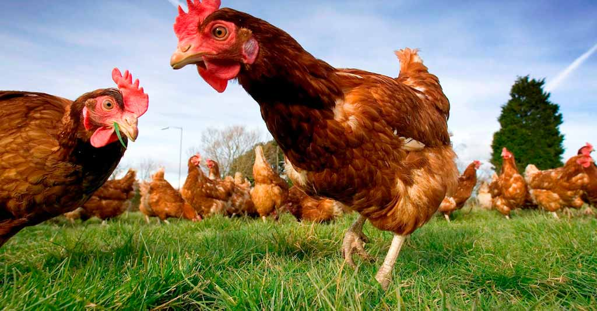
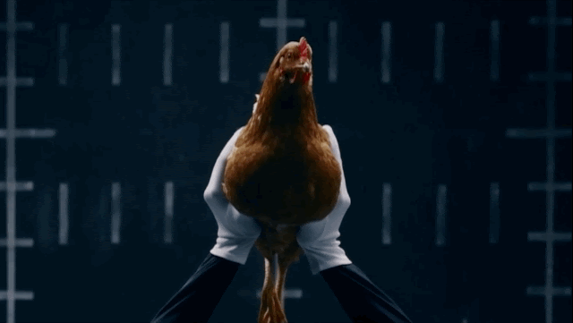
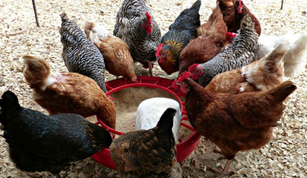
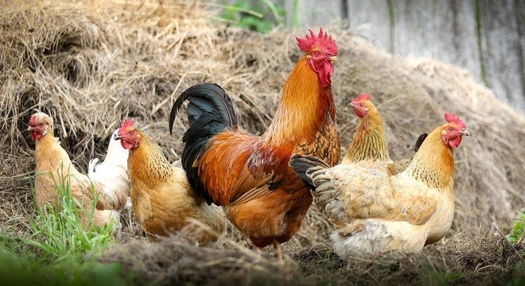

Galináceos
Atualmente, existem mais de 120 raças de galinhas catalogadas. Entretanto, as mais difundidas no Brasil são as de coloração pretas, vermelhas e carijós. Além da galinha caipira, é claro, que não tem raça definida.
Genealogicamente, pode-se considerar que as galinhas caipiras brasileiras sejam o resultado do cruzamento de diversas raças, o que ocorreu completamente ao acaso.
Na prática, algumas raças de galinhas têm preferência sobre as outras em termos de produção de carne e ovos, fatores determinantes para a atividade escolhida. Sendo assim, elaboramos uma curta lista com as raças de galinha caipira de maior potencial zootécnico no Brasil.
- Galinha Caipira Comum: é a mais distribuída pelo Brasil, podendo ser utilizada tanto para o corte como para a produção de ovos. Em média, cada ave pesa até 3 kg e gera até, 170 ovos/ano.
- Frango de Corte Colonial Embrapa 041: foi desenvolvido pela Embrapa, tendo como finalidade, o corte. Estas aves podem ser abatidas em, aproximadamente, 85 dias e com peso médio de 2,5 kg. Esta raça é muito resistente e, por isso, é indicada para criações rústicas.
- Embrapa 051: é a raça desenvolvida pela Embrapa de maior aceitação pelo mercado nacional. Pois pode ser direcionada tanto para o abate como para a produção de ovos. Esta galinha caipira inicia a postura a partir de 21 semanas, estendendo-se até a 80ª semana. Além disso, é considerada uma ave semipesada, de aproximadamente, 2 kg.
- Gigante Negra de Jersey: esta ave tem origem nos EUA, é de grande porte e pode pesar até 5 kg. No Brasil, ela é utilizada para cruzamento com outras raças de galinhas caipiras mais rústicas, para aumentar a sua capacidade zootécnica.
- Rhode Island Red: também é dos EUA e, apesar de ser utilizada para corte, a sua principal finalidade é a produção de ovos. Estas galinhas caipiras têm capacidade para produzir, cerca de, 250 ovos por anos.



Vantagens
Elas, por serem aves onívoras, reciclam restos de comida e resíduos orgânicos do quintal, evitando que os eles vão parar em lixões ou aterros. Sem contar que o composto produzido pelas aves resulta em um solo fertilizado rico em nitrogênio. E os problemas com insetos e pragas indesejáveis acabarão com a chegada dos frangos, que também podem te proporcionar ovos frescos e naturais, além da própria carne
Alimentação
Além dos animais, as galinhas também se alimentam de frutas, sementes, folhas e capins.
Pois insetos, pequenos anfíbios, lesmas, caramujos, e até mesmo algumas serpentes pequenas estão dentro da sua cadeia alimentar.
A ração para galinhas de abate é geralmente composta por ingredientes como milho-farelo de soja, e diversos nutrientes como cálcio e fósforo, calcário, fosfatos e micronutrientes (vitaminas e minerais).
Cuidados
Uma vez por semana, limpe o galinheiro, as galinhas e os recipientes de água e comida (esses você também deve desinfetar para evitar a proliferação de bactérias). E, uma vez a cada quatro meses, desinfete todo o galinheiro, ninho, poleiro, troque a palha para assim manter um ambiente saudável aos seus bichinhos.
O acúmulo das fezes do animal no local ajudam a proliferar doenças além de trazer um cheio desagradável ao local. Para isso é comum forrar o solo do galinheiro com uma lona e cobri-la com maravalha, serragem ou casca de arroz.
